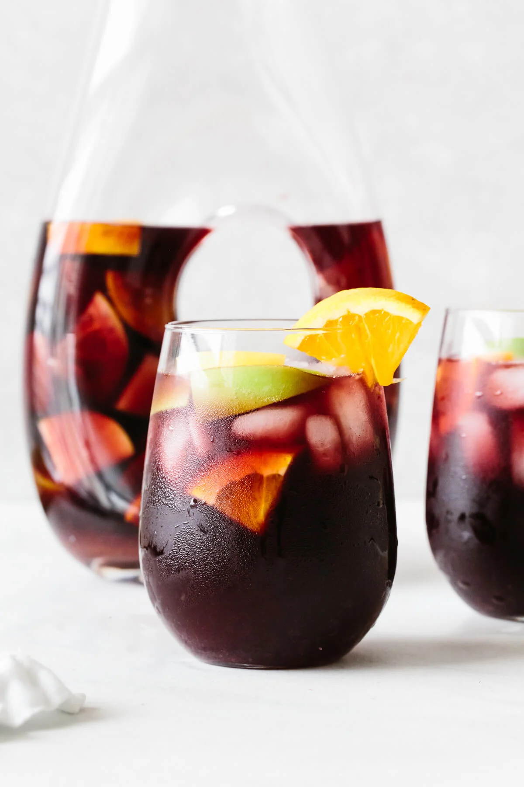

Sangria Recipe

Sangria is a sweet cocktail made from an infusion of Spanish red wine and fresh fruit. Essentially, it's a boozy fruit punch. It looks fancy, feels festive, and it's great for making ahead of time. So for your next summer event, greet your guests with a large pitcher of sangria. It'll sure get the party started.
Ingredients
- Red Wine: Spanish red wines are a go-to option for this recipe
- Liquor: To pair back with the red wine, it's traditional to use a little brandy.
- Chopped Fruit: Classic sangrias use diced oranges, apples, and lemon. But feel free to get creative with this based on seasonality!
- Sweetener: If your sangria is sweet enough from the fruits, then you won't need additional sweeteners. But you can always add a tablespoon or two of your favorite sweetener.
How To Make Sangria
- Chop the fruit: Dice the apple, orange, and lemon into small pieces or wedges. Make sure to leave the peels on and toss them into the pitcher.
- Give everything a stir: Pour the wine, brandy and any sweetener into the pitcher. Then stir everything together until it's all combined.
- Refrigerate: Chill for at least 4 hours, or overnight. The longer it sits, the more all the flavors meld together.
- Serve: Serve this sangria in individual glasses over ice, and top it off with sparkling water if you'd like! Make sure to get a few pieces of the fruit into the glass as well.